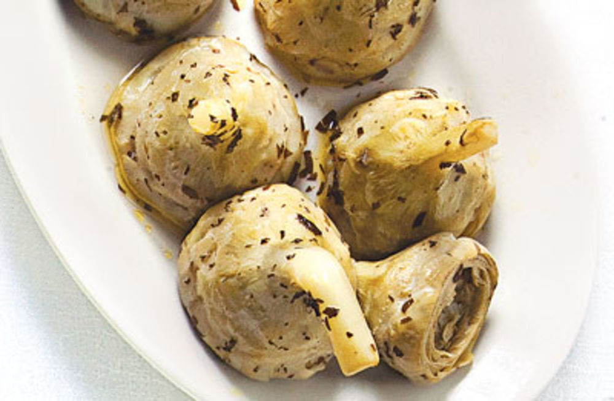

CARCIOFI ALLA ROMANA
MAY 13, 2016
Ingredients
- 6 large trimmed artichoke hearts with stems
- 2 cups white wine
- 1 cup extra-virgin olive oil
- 3 tbsp. minced fresh flat-leaf parsley
- 3 tbsp. minced mint leaves
- 2 tbsp. fresh lemon juice
- 4 cloves garlic, minced
- Kosher salt and freshly ground black pepper, to taste
Instructions
Place artichokes in a 3-qt. saucepan along with wine, oil, parsley, mint, lemon juice, garlic, and 2 cups water. Season with salt and pepper and bring to a boil. Reduce heat to medium-low and simmer artichokes, turning occasionally, until tender, 15–20 minutes.
To serve, transfer artichokes stem side up to a platter and drizzle with some of the cooking liquid.